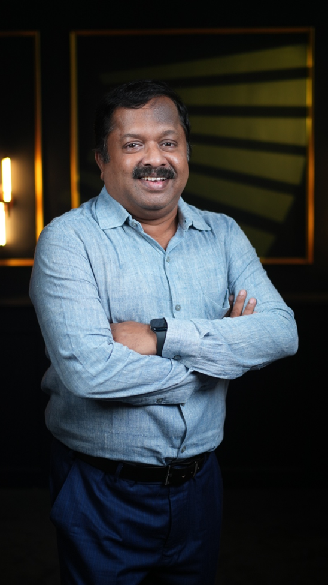

Scientific Research
Rigorous evaluation, protocol formulation, and evidence generation for classical Siddha formulations.
Bridging traditional knowledge and modern science through evidence generation, integrative healthcare, and community-based health initiatives.
Knowledge · Evidence · Wellbeing
A research-led approach to Siddha health
About SSRF
Sivaraman Siddha Research Foundation (SSRF) is a Chennai-based public charitable trust established in 2022. SSRF works to advance Siddha medicine through scientific research, integrative healthcare, preventive health initiatives, and community outreach, with a focus on improving health outcomes among underserved populations.
Rigorous evaluation, protocol formulation, and evidence generation for classical Siddha formulations.
Fostering medical pluralism by bridging traditional Siddha wisdom with contemporary biomedical healthcare.
Expanding preventive health initiatives, screenings, and outreach to vulnerable and underserved populations.
Our Focus
Lifestyle modification, dietary protocols, and supportive care research in integrative oncology.
Targeted screening, early diagnosis, and dietary interventions for metabolic and lifestyle disorders.
Interventions for anaemia, PCOD/PCOS, bone health, and targeted nutritional awareness.
Preclinical evaluation, reverse pharmacology, and scientific validation of classical formulations.
Research on millet-based nutrition, functional foods, and preservation of indigenous medicinal flora.
Institutional wellness programs promoting stress management, mindfulness, and healthy lifestyles.
Research & Innovation
Conferences
Conference Registration
Arogya Unified Research & Advancement in Siddha Medicine
AURA 2027 brings together Siddha practitioners, researchers, students, and professionals to encourage scientific research, clinical knowledge exchange, and innovation in Siddha medicine.
Institutional Collaborations
SSRF is strengthening interdisciplinary partnerships through Memoranda of Understanding (MoUs) with academic and research institutions to advance scientific research, technology-enabled validation, and innovation in traditional medicine.
Community Impact
Health initiative covering anaemia, bone density, and biochemical parameters.
Yoga and lifestyle awareness seminar held in Mylapore.
Youth wellness and stress management session in Ambattur.
Figures represent documented field activities and program records, not the foundation’s cumulative annual reach.
Leadership & Governance

B.S.M.S., Ph.D. · Founder and Managing Trustee
M.D.(S), Ph.D. · Trustee
Partnerships & CSR
SSRF welcomes academic bodies, corporate CSR teams, healthcare organizations, and philanthropic partners.
Registered under Section 12A and approved under Section 80G of the Income Tax Act, 1961.
Contact SSRF
Connect with us about research, community health, and institutional partnerships.
Sivaraman Siddha Research Foundation (SSRF)
No. C-18, Divyam Apartments, 474, First Main Road,
Mogappair Eri Scheme, Chennai, Tamil Nadu 600037, India